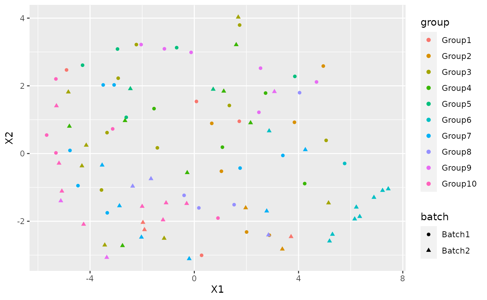
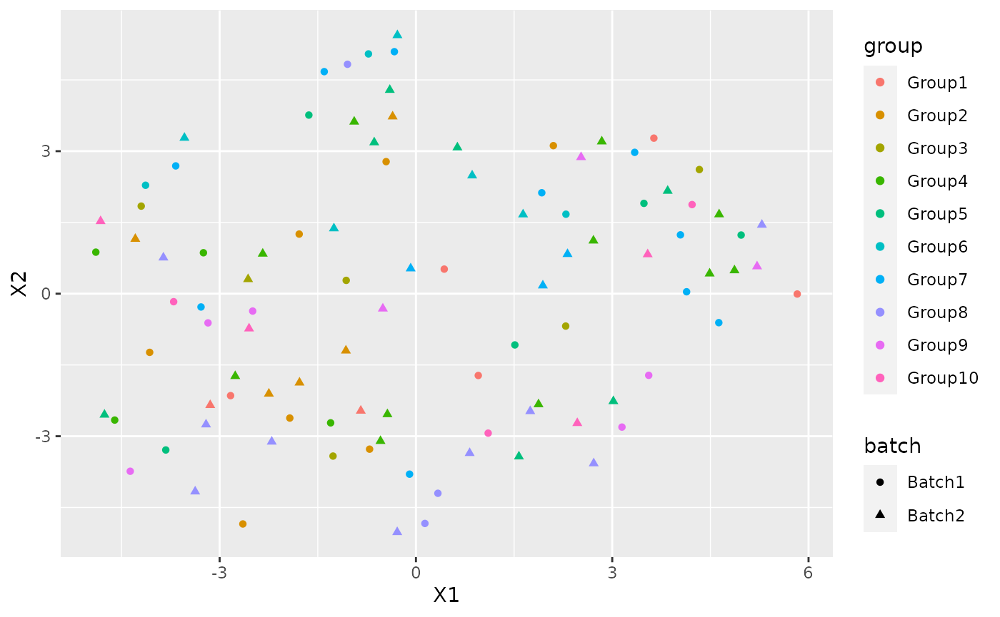

library(splatter) #> Loading required package: SingleCellExperiment #> Loading required package: SummarizedExperiment #> Loading required package: GenomicRanges #> Loading required package: stats4 #> Loading required package: BiocGenerics #> Loading required package: parallel #> #> Attaching package: 'BiocGenerics' #> The following objects are masked from 'package:parallel': #> #> clusterApply, clusterApplyLB, clusterCall, clusterEvalQ, #> clusterExport, clusterMap, parApply, parCapply, parLapply, #> parLapplyLB, parRapply, parSapply, parSapplyLB #> The following objects are masked from 'package:stats': #> #> IQR, mad, sd, var, xtabs #> The following objects are masked from 'package:base': #> #> anyDuplicated, append, as.data.frame, basename, cbind, colnames, #> dirname, do.call, duplicated, eval, evalq, Filter, Find, get, grep, #> grepl, intersect, is.unsorted, lapply, Map, mapply, match, mget, #> order, paste, pmax, pmax.int, pmin, pmin.int, Position, rank, #> rbind, Reduce, rownames, sapply, setdiff, sort, table, tapply, #> union, unique, unsplit, which.max, which.min #> Loading required package: S4Vectors #> #> Attaching package: 'S4Vectors' #> The following object is masked from 'package:base': #> #> expand.grid #> Loading required package: IRanges #> Loading required package: GenomeInfoDb #> Loading required package: Biobase #> Welcome to Bioconductor #> #> Vignettes contain introductory material; view with #> 'browseVignettes()'. To cite Bioconductor, see #> 'citation("Biobase")', and for packages 'citation("pkgname")'. #> Loading required package: DelayedArray #> Loading required package: Matrix #> #> Attaching package: 'Matrix' #> The following object is masked from 'package:S4Vectors': #> #> expand #> Loading required package: matrixStats #> #> Attaching package: 'matrixStats' #> The following objects are masked from 'package:Biobase': #> #> anyMissing, rowMedians #> #> Attaching package: 'DelayedArray' #> The following objects are masked from 'package:matrixStats': #> #> colMaxs, colMins, colRanges, rowMaxs, rowMins, rowRanges #> The following objects are masked from 'package:base': #> #> aperm, apply, rowsum library(NewWave) #> Loading required package: SharedObject library(irlba) library(Rtsne) library(ggplot2) library(mclust) #> Package 'mclust' version 5.4.6 #> Type 'citation("mclust")' for citing this R package in publications.
I am going to show how to use NewWave with example data. To do this I am going to generate some data using splatter.
params <- newSplatParams() N=100 set.seed(1234) data <- splatSimulateGroups(params,batchCells=c(N/2,N/2), group.prob = rep(0.1,10), de.prob = 0.2, verbose = FALSE)
Now we have a dataset with 1000 cells and 10000 genes, I will use only 1000. NewWave takes as input raw data, not normalized.
set.seed(12359) data <- data[-which(rowSums(counts(data))==0),] data <- data[sample(1:nrow(data),100),]
As you can see there is a variable called batch in the colData section.
colData(data) #> DataFrame with 100 rows and 4 columns #> Cell Batch Group ExpLibSize #> <character> <character> <factor> <numeric> #> Cell1 Cell1 Batch1 Group1 54983.1 #> Cell2 Cell2 Batch1 Group10 57895.9 #> Cell3 Cell3 Batch1 Group1 63335.0 #> Cell4 Cell4 Batch1 Group4 77862.4 #> Cell5 Cell5 Batch1 Group3 70236.5 #> ... ... ... ... ... #> Cell96 Cell96 Batch2 Group5 40864.8 #> Cell97 Cell97 Batch2 Group8 84957.7 #> Cell98 Cell98 Batch2 Group2 62989.9 #> Cell99 Cell99 Batch2 Group4 70251.4 #> Cell100 Cell100 Batch2 Group7 61297.3
IMPORTANT: For batch effecr removal the batch variable must be a factor
data$Batch <- as.factor(data$Batch)
We also have a variable called Group that represent the cell type labels.
We can see the how the cells are distributed between group and batch
pca <- prcomp_irlba(t(counts(data)),n=10) plot_data <-data.frame(Rtsne(pca$x)$Y)
plot_data$batch <- data$Batch plot_data$group <- data$Group
ggplot(plot_data, aes(x=X1,y=X2,col=group, shape=batch))+ geom_point()

There is a clear batch effect between the cells.
Let’s try to correct it.
The default options use 1 core and no mini-batch approaches, it don’t use the verbose option but I set it TRUE for example purpose(not suggested with big dataset). The default number of latent variables is 2.
res <- newWave(data,X = "~Batch", K=2, verbose = TRUE) #> Time of setup #> user system elapsed #> 0.017 0.000 0.298 #> Time of initialization #> user system elapsed #> 0.004 0.000 0.166 #> Iteration 1 #> penalized log-likelihood = -17672.9776034314 #> Time of dispersion optimization #> user system elapsed #> 0.041 0.000 0.041 #> after optimize dispersion = -17591.5608833721 #> Time of right optimization #> user system elapsed #> 0.001 0.000 0.297 #> after right optimization= -15791.3893949194 #> after orthogonalization = -15782.0156220364 #> Time of left optimization #> user system elapsed #> 0.001 0.000 0.196 #> after left optimization= -15709.3867230065 #> after orthogonalization = -15708.9055640852 #> Iteration 2 #> penalized log-likelihood = -15708.9055640852 #> Time of dispersion optimization #> user system elapsed #> 0.041 0.003 0.044 #> after optimize dispersion = -15494.4122756655 #> Time of right optimization #> user system elapsed #> 0.00 0.00 0.23 #> after right optimization= -15467.2846831719 #> after orthogonalization = -15466.5153631766 #> Time of left optimization #> user system elapsed #> 0.000 0.000 0.193 #> after left optimization= -15454.258097519 #> after orthogonalization = -15454.2469696597 #> Iteration 3 #> penalized log-likelihood = -15454.2469696597 #> Time of dispersion optimization #> user system elapsed #> 0.062 0.000 0.062 #> after optimize dispersion = -15454.0104908892 #> Time of right optimization #> user system elapsed #> 0.000 0.001 0.209 #> after right optimization= -15447.1101278055 #> after orthogonalization = -15447.0139481955 #> Time of left optimization #> user system elapsed #> 0.001 0.000 0.185 #> after left optimization= -15442.5564772071 #> after orthogonalization = -15442.5554483399 #> Iteration 4 #> penalized log-likelihood = -15442.5554483399 #> Time of dispersion optimization #> user system elapsed #> 0.047 0.000 0.047 #> after optimize dispersion = -15442.5541172167 #> Time of right optimization #> user system elapsed #> 0.001 0.000 0.198 #> after right optimization= -15439.3735666034 #> after orthogonalization = -15439.3375707448 #> Time of left optimization #> user system elapsed #> 0.001 0.000 0.170 #> after left optimization= -15437.1130516754 #> after orthogonalization = -15437.1128047774 #> Iteration 5 #> penalized log-likelihood = -15437.1128047774 #> Time of dispersion optimization #> user system elapsed #> 0.044 0.000 0.045 #> after optimize dispersion = -15437.1127850751 #> Time of right optimization #> user system elapsed #> 0.001 0.000 0.200 #> after right optimization= -15435.4298922799 #> after orthogonalization = -15435.4152115227 #> Time of left optimization #> user system elapsed #> 0.001 0.004 0.168 #> after left optimization= -15434.1308501301 #> after orthogonalization = -15434.1307271573 #> Iteration 6 #> penalized log-likelihood = -15434.1307271573 #> Time of dispersion optimization #> user system elapsed #> 0.047 0.000 0.047 #> after optimize dispersion = -15434.1305463466 #> Time of right optimization #> user system elapsed #> 0.001 0.000 0.215 #> after right optimization= -15433.092537461 #> after orthogonalization = -15433.0860874933 #> Time of left optimization #> user system elapsed #> 0.001 0.000 0.178 #> after left optimization= -15432.2399816156 #> after orthogonalization = -15432.2399036308 #> Iteration 7 #> penalized log-likelihood = -15432.2399036308 #> Time of dispersion optimization #> user system elapsed #> 0.042 0.004 0.046 #> after optimize dispersion = -15432.2397185219 #> Time of right optimization #> user system elapsed #> 0.001 0.000 0.193 #> after right optimization= -15431.5232683779 #> after orthogonalization = -15431.5200489543 #> Time of left optimization #> user system elapsed #> 0.000 0.000 0.172 #> after left optimization= -15430.9096370023 #> after orthogonalization = -15430.9095792857
In order to make it faster you can increase the number of cores using “children” parameter:
res2 <- newWave(data,X = "~Batch", K=2, verbose = TRUE, children=2) #> Time of setup #> user system elapsed #> 0.011 0.004 0.315 #> Time of initialization #> user system elapsed #> 0.004 0.000 0.170 #> Iteration 1 #> penalized log-likelihood = -17672.9775236347 #> Time of dispersion optimization #> user system elapsed #> 0.044 0.004 0.047 #> after optimize dispersion = -17591.5607915815 #> Time of right optimization #> user system elapsed #> 0.001 0.000 0.240 #> after right optimization= -15791.3890655716 #> after orthogonalization = -15782.015260244 #> Time of left optimization #> user system elapsed #> 0.000 0.000 0.113 #> after left optimization= -15709.3863921751 #> after orthogonalization = -15708.9052336586 #> Iteration 2 #> penalized log-likelihood = -15708.9052336586 #> Time of dispersion optimization #> user system elapsed #> 0.04 0.00 0.04 #> after optimize dispersion = -15494.4118858875 #> Time of right optimization #> user system elapsed #> 0.001 0.000 0.114 #> after right optimization= -15467.2843479647 #> after orthogonalization = -15466.515028287 #> Time of left optimization #> user system elapsed #> 0.001 0.000 0.098 #> after left optimization= -15454.257815493 #> after orthogonalization = -15454.2466877142 #> Iteration 3 #> penalized log-likelihood = -15454.2466877142 #> Time of dispersion optimization #> user system elapsed #> 0.045 0.000 0.044 #> after optimize dispersion = -15454.0102095656 #> Time of right optimization #> user system elapsed #> 0.001 0.000 0.120 #> after right optimization= -15447.1098991736 #> after orthogonalization = -15447.0137200991 #> Time of left optimization #> user system elapsed #> 0.001 0.000 0.094 #> after left optimization= -15442.5562901777 #> after orthogonalization = -15442.5552613231 #> Iteration 4 #> penalized log-likelihood = -15442.5552613231 #> Time of dispersion optimization #> user system elapsed #> 0.044 0.000 0.044 #> after optimize dispersion = -15442.5539302439 #> Time of right optimization #> user system elapsed #> 0.00 0.00 0.11 #> after right optimization= -15439.3734104585 #> after orthogonalization = -15439.337415019 #> Time of left optimization #> user system elapsed #> 0.001 0.000 0.094 #> after left optimization= -15437.1129168495 #> after orthogonalization = -15437.1126699525 #> Iteration 5 #> penalized log-likelihood = -15437.1126699525 #> Time of dispersion optimization #> user system elapsed #> 0.045 0.000 0.045 #> after optimize dispersion = -15437.112650247 #> Time of right optimization #> user system elapsed #> 0.001 0.000 0.113 #> after right optimization= -15435.4297729942 #> after orthogonalization = -15435.4150924702 #> Time of left optimization #> user system elapsed #> 0.000 0.000 0.094 #> after left optimization= -15434.1307428475 #> after orthogonalization = -15434.130619864 #> Iteration 6 #> penalized log-likelihood = -15434.130619864 #> Time of dispersion optimization #> user system elapsed #> 0.045 0.000 0.046 #> after optimize dispersion = -15434.1304390512 #> Time of right optimization #> user system elapsed #> 0.001 0.000 0.109 #> after right optimization= -15433.0924398413 #> after orthogonalization = -15433.0859899727 #> Time of left optimization #> user system elapsed #> 0.000 0.000 0.097 #> after left optimization= -15432.2398934028 #> after orthogonalization = -15432.2398154182 #> Iteration 7 #> penalized log-likelihood = -15432.2398154182 #> Time of dispersion optimization #> user system elapsed #> 0.049 0.004 0.053 #> after optimize dispersion = -15432.2396303089 #> Time of right optimization #> user system elapsed #> 0.00 0.00 0.11 #> after right optimization= -15431.5231869821 #> after orthogonalization = -15431.519967483 #> Time of left optimization #> user system elapsed #> 0.001 0.000 0.092 #> after left optimization= -15430.9095560141 #> after orthogonalization = -15430.9094982215
Or use some mini-batch approaches: - n_gene_disp : Number of genes to use in the dispersion optimization - n_cell_par : Number of cells to use in the cells related parameters optimization - n_gene_par : Number of genes to use in the genes related parameters optimization
res3 <- newWave(data,X = "~Batch", verbose = TRUE,K=2, children=2, n_gene_disp=100, n_gene_par = 100, n_cell_par = 100, commondispersion = FALSE) #> Time of setup #> user system elapsed #> 0.014 0.000 0.301 #> Time of initialization #> user system elapsed #> 0.003 0.000 0.161 #> Iteration 1 #> penalized log-likelihood = -17672.9776036661 #> Time of dispersion optimization #> user system elapsed #> 0.039 0.000 0.038 #> after optimize dispersion = -17591.5608834334 #> Time of right optimization #> user system elapsed #> 0.000 0.000 0.194 #> after right optimization= -15791.3894014711 #> after orthogonalization = -15782.0156293851 #> Time of left optimization #> user system elapsed #> 0.000 0.000 0.103 #> after left optimization= -15709.3867274515 #> after orthogonalization = -15708.9055685188 #> Iteration 2 #> penalized log-likelihood = -15708.9055685188 #> Time of dispersion optimization #> user system elapsed #> 0.003 0.000 0.058 #> after optimize dispersion = -15417.7577216699 #> Time of right optimization #> user system elapsed #> 0.001 0.000 0.110 #> after right optimization= -15397.7254093382 #> after orthogonalization = -15397.6539747109 #> Time of left optimization #> user system elapsed #> 0.000 0.000 0.097 #> after left optimization= -15323.8273397337 #> after orthogonalization = -15323.7906644666 #> Iteration 3 #> penalized log-likelihood = -15323.7906644666 #> Time of dispersion optimization #> user system elapsed #> 0.004 0.000 0.026 #> after optimize dispersion = -15323.7841017448 #> Time of right optimization #> user system elapsed #> 0.000 0.001 0.099 #> after right optimization= -15311.8944011134 #> after orthogonalization = -15311.7037183966 #> Time of left optimization #> user system elapsed #> 0.001 0.000 0.082 #> after left optimization= -15303.2595415893 #> after orthogonalization = -15303.2562211683 #> Iteration 4 #> penalized log-likelihood = -15303.2562211683 #> Time of dispersion optimization #> user system elapsed #> 0.004 0.000 0.017 #> after optimize dispersion = -15303.2476447575 #> Time of right optimization #> user system elapsed #> 0.005 0.000 0.100 #> after right optimization= -15296.1866684339 #> after orthogonalization = -15296.0612174338 #> Time of left optimization #> user system elapsed #> 0.001 0.000 0.088 #> after left optimization= -15290.2739637119 #> after orthogonalization = -15290.2725560208 #> Iteration 5 #> penalized log-likelihood = -15290.2725560208 #> Time of dispersion optimization #> user system elapsed #> 0.004 0.000 0.017 #> after optimize dispersion = -15290.2801352305 #> Time of right optimization #> user system elapsed #> 0.000 0.000 0.094 #> after right optimization= -15285.2880167419 #> after orthogonalization = -15285.2027335471 #> Time of left optimization #> user system elapsed #> 0.000 0.000 0.088 #> after left optimization= -15281.0847655215 #> after orthogonalization = -15281.0840464331 #> Iteration 6 #> penalized log-likelihood = -15281.0840464331 #> Time of dispersion optimization #> user system elapsed #> 0.004 0.000 0.017 #> after optimize dispersion = -15281.0788706448 #> Time of right optimization #> user system elapsed #> 0.000 0.000 0.095 #> after right optimization= -15277.5707128214 #> after orthogonalization = -15277.5156707923 #> Time of left optimization #> user system elapsed #> 0.000 0.000 0.086 #> after left optimization= -15274.6526411716 #> after orthogonalization = -15274.6522739969 #> Iteration 7 #> penalized log-likelihood = -15274.6522739969 #> Time of dispersion optimization #> user system elapsed #> 0.004 0.000 0.018 #> after optimize dispersion = -15274.6565006157 #> Time of right optimization #> user system elapsed #> 0.000 0.000 0.094 #> after right optimization= -15272.2545486356 #> after orthogonalization = -15272.2212626519 #> Time of left optimization #> user system elapsed #> 0.001 0.000 0.087 #> after left optimization= -15270.2777867862 #> after orthogonalization = -15270.2776159011 #> Iteration 8 #> penalized log-likelihood = -15270.2776159011 #> Time of dispersion optimization #> user system elapsed #> 0.004 0.000 0.018 #> after optimize dispersion = -15270.2745100753 #> Time of right optimization #> user system elapsed #> 0.003 0.000 0.091 #> after right optimization= -15268.6627046334 #> after orthogonalization = -15268.6435554324 #> Time of left optimization #> user system elapsed #> 0.000 0.000 0.087 #> after left optimization= -15267.3477182178 #> after orthogonalization = -15267.3476456232 #> Iteration 9 #> penalized log-likelihood = -15267.3476456232 #> Time of dispersion optimization #> user system elapsed #> 0.012 0.000 0.027 #> after optimize dispersion = -15267.3501712382 #> Time of right optimization #> user system elapsed #> 0.000 0.000 0.095 #> after right optimization= -15266.2817059728 #> after orthogonalization = -15266.270946875 #> Time of left optimization #> user system elapsed #> 0.000 0.000 0.085 #> after left optimization= -15265.4118008673 #> after orthogonalization = -15265.4117709615 #> Iteration 10 #> penalized log-likelihood = -15265.4117709615 #> Time of dispersion optimization #> user system elapsed #> 0.004 0.000 0.019 #> after optimize dispersion = -15265.4098023491 #> Time of right optimization #> user system elapsed #> 0.001 0.000 0.094 #> after right optimization= -15264.703261074 #> after orthogonalization = -15264.6973066036 #> Time of left optimization #> user system elapsed #> 0.000 0.000 0.085 #> after left optimization= -15264.1270881786 #> after orthogonalization = -15264.127073679
Now I can use the latent dimension rapresentation for visualization purpose:
latent <- reducedDim(res) tsne_latent <- data.frame(Rtsne(latent)$Y) tsne_latent$batch <- data$Batch tsne_latent$group <- data$Group
ggplot(tsne_latent, aes(x=X1,y=X2,col=group, shape=batch))+ geom_point()

or for clustering:
cluster <- kmeans(latent, 10) adjustedRandIndex(cluster$cluster, data$Group) #> [1] 0.02205628